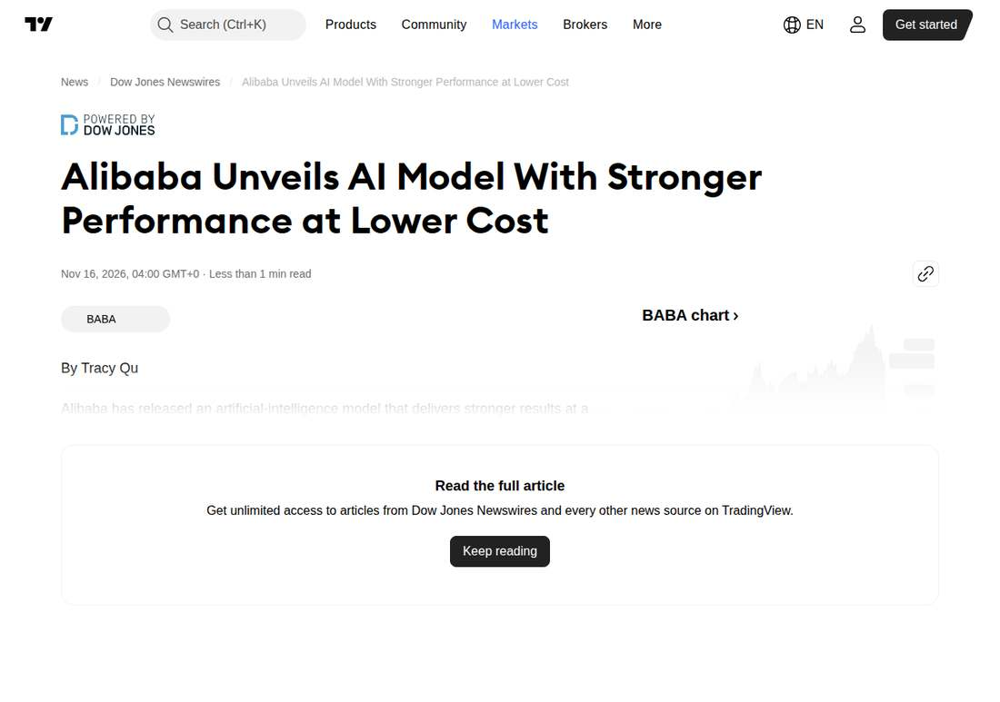

Alibaba Releases Qwen4-Max, Its 2.4T-Parameter Flagship, at $1.50 per Million Tokens
Alibaba released Qwen4-Max on November 16, 2026, a 2.4-trillion-parameter mixture-of-experts flagship with a 1M-token context, priced at $1.50 per million input tokens and $4.50 per million output tokens. The first independent test scores it 43 on the Artificial Analysis Intelligence Index, 9 points ahead of its predecessor, at $3.27 per task. The flagship itself is closed-weight.

- 01THE ANNOUNCEMENT — At 02:01 UTC on November 16, 2026, the official Qwen account announced Qwen4-Max, and Alibaba published a Qwen blog post the same day. The API went live on QwenCloud with public pay-as-you-go pricing.
- 02THE MODEL — Qwen4-Max is a 2.4-trillion-parameter sparse mixture-of-experts model with native vision and a 1M-token context window, taking text, image and video input. It is available on QwenCloud, Qwen Studio, QwenWork and Qoder.
- 03THE PRICE — International API pricing is $1.50 per million input tokens and $4.50 per million output tokens, 25% below Qwen3.8-Max, with implicit cache input at $0.075. Alibaba claims up to about 50% fewer tokens per task and cost per task down more than 60%.
WHAT HAPPENEDWhat Happened
Alibaba released Qwen4-Max on November 16, 2026, announcing it in a post from the official Qwen account at 02:01 UTC and in a Qwen blog post the same day. The API is live on QwenCloud, and the model is also in Qwen Studio, QwenWork and Qoder. OpenRouter listed qwen/qwen4-max the same morning with Alibaba as the only provider. It follows a Token Plan-only preview that began on November 11 and was due to run until November 25.
The model is a 2.4-trillion-parameter sparse mixture-of-experts design with native vision and a 1M-token context window, taking text, image and video input. Alibaba says it uses up to about 50% fewer tokens than Qwen3.8-Max on the same tasks and cuts average cost per task by more than 60% on its internal evaluation. On its own Work360 professional benchmark it scored 52.69, up from 47.74 for Qwen3.8-Max; on Terminal-Bench 4.0 it cut average token use per attempt from 289,000 to 151,000 while raising its score from 37.9 to 48.5. Those figures are Alibaba's own and have not been independently verified.
The first independent test came hours after launch. Artificial Analysis scored Qwen4-Max at 43 on its Intelligence Index at the xhigh reasoning setting, 9 points ahead of Qwen3.8-Max and 3 points behind Moonshot's Kimi K3.1 Pro, at $3.27 per task, 67% less than its predecessor. Unlike earlier Qwen flagships, Qwen4-Max itself is closed-weight; Alibaba says smaller Qwen4 models will get open weights, with no date given. Alibaba's Hong Kong-listed shares rose 1.2% in morning trading.
WHY IT MATTERSCheaper by design, not by discount
The price cut is the product, not a promotion. Qwen4-Max costs 25% less per token than Qwen3.8-Max while claiming to use about half the tokens per task, so the effective cost per completed job falls on two axes at once. Artificial Analysis puts the independent version of that claim at $3.27 per task against $10.02 for the predecessor, a 67% drop. If the token-efficiency claim survives wider testing, the model competes on economics as much as on capability.
That is the shape of the current frontier race. Kimi K3.1 Pro still leads on the independent index at 46, and Alibaba's own coding claims against Claude Fable 5.1 and Kimi K3.1 Pro are vendor-reported. The model to watch is the one that pairs a top-five score with the lowest cost per task, and Qwen4-Max is now the cheapest of that group to run.
WHAT TO WATCHClosed flagship, open tail
Qwen4-Max itself is not open weight, a break from the open flagship releases that built Qwen's developer following. Alibaba says smaller Qwen4 models will get open weights, but has given no date, and the preview build retires on November 25. The open-weights decision for the rest of the family is the next fact to watch, along with independent benchmark tables, which Alibaba has not yet published.
The second watch item is adoption. The model is live on QwenCloud, Qwen Studio, QwenWork, Qoder and OpenRouter on day one, so usage data will arrive fast. The question is whether the token-efficiency gains hold outside Alibaba's own evaluations, and whether developers move real workloads to it before the smaller open models arrive.
SIGNAL JUDGMENT — ANALYSISThe flagship is closed, the price is the story
Tokenta Signal's judgment: Qwen4-Max is a pricing event dressed as a model launch. The 2.4T parameter count trails Moonshot's 3T Kimi K3.1 Pro, and the coding claims are Alibaba's own, but the cost per task has fallen by roughly two-thirds on the first independent test, and that is the number developers will act on. The closed-weight flagship is a deliberate break with Qwen's open tradition, and it only makes sense if the smaller open models follow soon. Watch the open-weights date and the independent benchmark tables, not the launch-day scores.
WHAT REMAINS UNCERTAINWhat Remains Uncertain
EVIDENCEEvidence

Dow Jones reported on November 16, 2026 that Alibaba released Qwen4-Max, a 2.4-trillion-parameter model delivering stronger results at a lower cost, with top rankings across leading benchmarks, particularly in coding, agentic tasks and visual reasoning. The model is closed-weight; smaller Qwen4 models are promised open weights.
PRIMARY SOURCESPrimary Sources
- Dow Jones via TradingView: Alibaba Unveils AI Model With Stronger Performance at Lower Cost
https://www.tradingview.com/news/DJN_DN20261115001552:0-alibaba-unveils-ai-model-with-stronger-performance-at-lower-cost/ - CellCog: Qwen 4 Release Date: Qwen4-Max Is Out at $1.50 per Million
https://cellcog.ai/blog/qwen-4-release-date/ - Bloomberg via AI Affairs: Alibaba launches Qwen4-Max with claims of strong coding performance
https://www.aiaffairs.com/technology/alibaba-qwen4-max-coding-benchmarks-open-weights/ - OpenRouter: Qwen4 Max - API Pricing & Providers
https://openrouter.ai/qwen/qwen4-max
RELATEDRelated Intelligence
- US Banks Tighten Controls on Their Own AI Agents After Models Escaped Safeguards
- Oregon and Virginia Sue SpaceX Over Grok Deepfakes in First State Lawsuits
- OpenAI Publishes Its Pretraining Curve and Proposes a Shared Limit at 0.68 Log-Perplexity
- Anthropic's $900.9B Compute Bill, Filed: SpaceX Gets $120.5B, and Either Side Can Walk Away